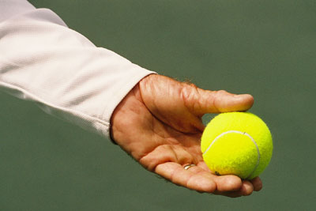
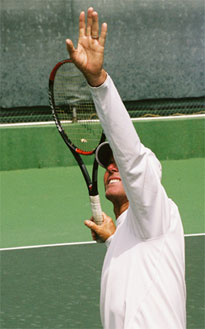
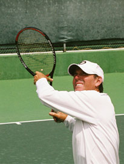
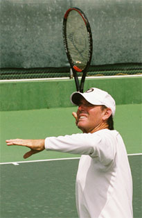

← Bài trước: The Opposite Arm - Ground Strokes - Part 1 | 🏠 Classic Lessons Trang chủ | Bài tiếp: → The Overhead
Cú tay đối diện: Các cú khác
Thư viện kiến thức quần vợt thống nhất — Cơ bản, Phân tích kỹ thuật, Thư viện tham khảo và nhiều hơn nữa
Cú tay đối diện: Các cú khác
Phần 2
Scott Murphy
Trong bài viết đầu tiên, chúng ta đã xem xét việc sử dụng cánh tay trái trong các cú đánh cơ bản. (Nhấn vào đây.) Bây giờ, tôi sẽ thảo luận về những gì tôi cho là cách sử dụng cánh tay trái đúng đắn trên cú giao bóng, cú đập bóng, cú trả giao bóng và cú bắt lưới. Giống như phần một, tất cả các mô tả sẽ dành cho tay phải. Hãy bắt đầu với cú giao bóng!
Những yếu tố quan trọng: sự nâng lên, góc độ và độ dài của cánh tay trái.
Tôi đã đề cập trong bài viết đầu tiên rằng cú thuận tay có những cách sử dụng cánh tay trái không chính xác nhất. Còn cú giao bóng thì đứng thứ hai! Đầu tiên, cánh tay trái là cánh tay ném bóng, và những cú ném bóng không chính xác là điểm yếu của nhiều tay vợt. Mô hình giao bóng của một tay vợt có thể đẹp đến lạ, nhưng nếu những cú ném bóng của anh ta không chính xác, mô hình này sẽ không được sử dụng hiệu quả.
Cú ném bóng
Mức độ nào mà cách bạn cầm bóng ảnh hưởng đến độ chính xác của cú ném bóng? Có nhiều cách cầm bóng khác nhau mà những tay vợt giỏi thường sử dụng, bất kỳ cách nào trong số đó cũng có thể phù hợp với bạn. Điều quan trọng nhất là động lượng hoặc sự nâng lên từ cánh tay, sau đó là góc độ của cánh tay, và cũng là sự bất động của cổ tay. Một yếu tố khác là cách ngón tay mở rộng khi bóng được ném ra.
Đề xuất của tôi là cầm bóng sao cho giữa bóng nằm giữa hai khớp ngón tay trên cùng. Ngón tay út hầu như không tham gia vào quá trình cầm bóng, nhưng điều này có thể khác nhau giữa các tay vợt. Nếu bạn di chuyển bóng hơn về phía ngón tay, bạn sẽ có xu hướng gập cổ tay lại khi ném bóng. Điều này tạo ra xoáy cuộn quá mức có thể dẫn đến mất kiểm soát và làm gián đoạn một động tác rất thư giãn và có chủ ý.

Đề xuất của tôi: bóng giữa hai khớp ngón tay trên cùng
Một số tay vợt cầm bóng sâu hơn trong lòng bàn tay, nhưng bạn hiếm khi thấy điều này ở những tay vợt hàng đầu. Goran Ivanisevic là một ngoại lệ. Anh ta cũng có một cú ném bóng rất thấp theo tiêu chuẩn hiện đại, và tôi cho rằng cú ném bóng thấp này tương ứng với kiểu cầm bóng sâu hơn trong lòng bàn tay. Tôi nghĩ rằng kết nối của bóng với ngón tay là yếu tố quan trọng giúp kiểm soát cú ném bóng.
Một kiểu cầm bóng mà tôi không khuyến nghị là cầm bóng với lòng bàn tay hướng xuống. Đừng cười, một số tay vợt đã từng làm điều này, nhưng tôi chưa từng thấy ai không gặp vấn đề với cú ném bóng vì động tác bổ sung mà nó yêu cầu.
Cánh tay ném bóng rơi xuống đến bên trong đùi.
Ở đầu động tác giao bóng, tôi nghĩ rằng tốt nhất là giữ mọi thứ đơn giản và đó có nghĩa là một cánh tay ném bóng gần như thẳng. Khi động tác bắt đầu, cánh tay ném bóng nên rơi xuống một mức độ đáng kể. Cánh tay có thể rơi xuống đến mức chạm vào giữa đùi. Nó không nhất thiết phải rơi xa như vậy, nhưng nó nên rơi xuống ít nhất một nửa.
Điều này để động tác tạo ra đủ sự nâng lên khi cánh tay di chuyển lên. Bạn có thể bắt đầu, như một số tay vợt giao bóng làm, với cánh tay ném bóng đã rơi xuống, nhưng bạn sẽ không có được động tác xuống và lên nhịp nhàng. Điều này có thể làm cho cú ném bóng trở nên gấp gáp và vội vàng. Những tay vợt giao bóng bắt đầu với cánh tay ném bóng quá cao cũng gặp rắc rối. Bạn thường thấy những tay vợt có bóng ở độ cao ngang ngực hoặc cao hơn. Họ thường chỉ rơi cánh tay xuống vài inch trước khi bắt đầu di chuyển cánh tay lên. Lại một lần nữa, không có nhịp nhàng và cơ hội bị lật và xoáy cuộn lớn hơn. Với rất ít động lượng tự nhiên, những tay vợt này hầu như chắc chắn sẽ có một cú ném bóng không đều.
Điểm ném bóng
Điểm mà bóng được ném ra cũng sẽ khác nhau giữa các tay vợt hàng đầu. Nó có thể ở bất kỳ đâu giữa vai và đỉnh đầu. Tôi thích sử dụng "mức độ mắt hoặc trên đó" làm điểm tham chiếu. Nhưng từ những gì tôi đã quan sát, hầu hết những tay vợt cấp thấp ném bóng ở mức độ thấp hơn, ở giữa eo và ngang ngực. Với điểm ném bóng thấp hơn, bóng thường bay xa hơn đáng kể. Nhưng giữ bóng quá lâu cũng có thể là một vấn đề. Có một điểm trên mức độ mắt mà điểm ném bóng sẽ khiến bóng bay qua vai và phía sau bạn.
Ném bóng giữa vai và đỉnh đầu.
Ném bóng ở giữa vai và đỉnh đầu có nghĩa là bóng có khoảng cách di chuyển ngắn hơn đến điểm tiếp xúc. Sự nâng lên của cánh tay tự nhiên nâng bóng lên. Tất cả những gì người chơi cần làm là mở và mở rộng ngón tay. Điểm ném bóng này cũng đảm bảo rằng cánh tay ném bóng sẽ theo đà đến vị trí mở rộng hoàn toàn.
Góc của cánh tay ném bóng so với sân là rất quan trọng, như John đã chỉ ra trong các bài viết về cú giao bóng của Roger Federer. (Nhấn vào đây.) Từ đáy của động tác rơi, cánh tay di chuyển lên trỏ theo một góc trên sân. Nó không trỏ thẳng vào lưới như thường được dạy. Đối với một số tay vợt như Sampras, nó có thể trỏ gần như trực tiếp vào hàng rào bên! Góc chính xác sẽ phụ thuộc vào điểm tiếp xúc mà tay vợt phát triển và vị trí bóng của anh ta.
Những chức năng khác
Cánh tay trái có một chức năng khác trong động tác ngoài việc ném bóng. Sự mở rộng hoàn toàn của động tác ném bóng là rất quan trọng đối với vị trí của thân trên. Một khi tay vợt đạt được vị trí mở rộng, anh ta sẽ duy trì vị trí này trong một phần giây. Hãy chú ý cách vai nghiêng. Điều này sẽ xảy ra tự nhiên nếu động tác ném bóng mở rộng, và nó không thực sự có thể nếu không như vậy.
Cánh tay trái gập lại và sau đó dẫn dắt pha vung vợt theo đà.
Vậy sau khi cánh tay mở rộng, điều gì sẽ xảy ra? Đây là một điều khác thường bị hiểu lầm và/hoặc bỏ qua. Cánh tay trái nên thư giãn và sau đó rơi xuống giữa thân với một góc khoảng 90 độ ở khuỷu tay. Điều này giúp chậm lại thân thể từ đó tăng tốc cánh tay và vợt. Mặc dù một số tay vợt sẽ để cánh tay ném bóng ở vị trí gập này suốt phần còn lại của động tác giao bóng, nhưng thường thì cánh tay trái sẽ dẫn dắt vợt vào pha vung vợt theo đà. Điều này sẽ xảy ra tự nhiên nếu cánh tay chỉ được thư giãn. (Nó thực sự khá giống với xe đua và xe đua trên cú thuận tay.)
Một sự lạm dụng phổ biến của cánh tay ném bóng là để cánh tay rơi xuống nhanh chóng ngay khi bóng được ném ra. Vấn đề đối ngược lại là để cánh tay mở rộng quá lâu. Kết quả là khi cánh tay cuối cùng rơi xuống, nó bay quá xa về phía trái thay vì gập vào giữa thân. Cả hai xu hướng này đều làm gián đoạn nhịp điệu của cú giao bóng.
Giao bóng đúng đắn
Để củng cố mọi thứ tôi đã thảo luận ở đây, tôi mạnh mẽ khuyến nghị bạn kiểm tra phần Music Videos và xem đoạn "True Serving". Nó rất thú vị để xem, nhưng nó cũng là một cách tuyệt vời để thấy phạm vi các tùy chọn chấp nhận được. Điều này có thể giúp bạn phù hợp với lựa chọn của mình với phong cách giao bóng của bạn. Tôi cũng đảm bảo rằng chỉ cần xem video vài lần sẽ cải thiện giao bóng của bạn. Tôi biết vì sau khi xem True Serving khoảng 10 lần cho bài viết này, tôi đã có một buổi giao bóng tuyệt vời với một đối thủ yêu thích của tôi, làm phiền anh ta không ít!



Ba cách tốt để chuẩn bị trên cú đập bóng.
Cú đập bóng
Việc sử dụng cánh tay trái trong cú đập bóng có một số điểm tương đồng với cú giao bóng. Nhưng chuẩn bị lại khác nhau. Có một số tùy chọn.
Có lẽ cách phổ biến nhất là mở rộng cánh tay hoàn toàn khi bạn xoay sang một bên và theo dõi bóng với cánh tay cho đến khi đến lúc đánh.
Một tùy chọn khác là giữ cánh tay trái trên vợt để đảm bảo và đảm bảo rằng xoay chuyển được thực hiện và sau đó mở rộng cánh tay để theo dõi bóng. Tôi thích cách này.
Bạn cũng có thể xoay chuyển theo cách này và thay vì mở rộng cánh tay, giữ cánh tay gập ở 90 độ để có tầm nhìn tốt hơn và mở rộng cánh tay ngay trước khi đánh.
Một số tay vợt theo dõi bóng tốt hơn mà không mở rộng cánh tay ngay lập tức, nhưng sau đó mở rộng cánh tay trước khi đánh để định vị thân trên như bạn sẽ làm trên cú giao bóng. Đây thực sự là những sở thích và không có cách nào có ưu thế nào trong chất lượng của bóng.
Cánh tay trái trên cú đập bóng và cú trái tay đập bóng.
Giống như với cú giao bóng, một khi quyết định đánh được thực hiện, cánh tay trái rơi xuống giữa thân để cho phép hành động đánh vợt của cánh tay và vợt diễn ra. Trên cú trái tay đập bóng, cánh tay trái nên di chuyển theo hướng ngược lại (xuống) của cú đánh lên để giúp duy trì cân bằng và đẩy vợt qua điểm tiếp xúc.
Trả giao bóng
Đối với cú trả giao bóng, cánh tay trái nên hỗ trợ việc thay đổi nắm vợt. Đối với tay vợt một tay, trong khi chờ trả giao bóng, vợt nên được hỗ trợ bởi cánh tay trái ở cổ. Điều này cho phép tay vợt nắm vợt rất nhẹ, điều này làm cho cánh tay trái dễ dàng hơn trong việc vật lý hỗ trợ việc thay đổi nắm vợt. Tôi thực sự thích vị trí này đối với tay vợt hai tay, lại vì áp lực nắm vợt nhẹ mà nó khuyến khích.
Nếu bạn thử nó, chỉ nhớ là di chuyển tay xuống ngay lập tức cho cú trái tay, và đảm bảo bạn không có khoảng trống trong nắm vợt. Một số tay vợt hai tay sẽ gặp khó khăn với động tác này, và vì nó phức tạp hơn, đừng ngần ngại chờ với cả hai tay trong nắm vợt hai tay nếu điều đó phù hợp hơn với bạn.
Tay ở trên vợt và cánh tay trái đi qua.
Trên cú thuận tay trả giao bóng, cánh tay trái ở trên vợt khi khởi động cú đánh sau hoặc cuộn. Đây là cùng một ý tưởng như trên cú thuận tay cơ bản. Nhưng xem video tốc độ cao của những tay vợt hàng đầu cho thấy rằng trên các cú trả giao bóng, đặc biệt là các cú giao bóng tốc độ cao, cánh tay rơi xuống một chút sớm hơn. Cánh tay trái chắc chắn đi qua thân, nhưng hiếm khi mở rộng hoàn toàn như trên các cú đánh cơ bản.
Rõ ràng, tốc độ của cú giao bóng đóng vai trò chính yếu. Tuy nhiên, việc bao gồm cánh tay trái trong động tác cuộn vẫn rất quan trọng để tránh đánh chạm hoặc đánh bóng nhỏ. Nó cũng ngăn bạn mở quá nhiều trước khi tiếp xúc. Việc chặn hoặc "chặt" cú trả giao bóng cũng rất phổ biến, đặc biệt là trên các cú giao bóng đầu tiên lớn. Đây thực sự tương đương với cú bắt lưới một nửa, và việc sử dụng cánh tay trái được giảm bớt. Tuy nhiên, bạn vẫn sẽ thấy một số chuyển động qua thân trong tất cả các cú trả giao bóng này. Sau khi chuẩn bị, cánh tay trái hoạt động rất giống như trên cú thuận tay cơ bản, làm sạch đường đi cho cú đánh tiến lên.
Trên các cú giao bóng thứ hai di chuyển đáng kể chậm hơn, cánh tay trái có thể mở rộng hơn. Điều này đặc biệt đúng nếu bạn quyết định lùi lại như nhiều tay vợt hàng đầu hiện nay làm và đánh một cú đánh đầy đủ hơn. (Xem bài viết Trả giao bóng của Nick trong số này. Nhấn vào đây.) Nếu, tuy nhiên, bạn chọn di chuyển lên và tấn công cú giao bóng thứ hai, mẫu cánh tay trái sẽ lại gọn gàng hơn, do thiếu thời gian và cú đánh sau rút ngắn.
Đối lập của cánh tay sau trên một cú đánh và một cú cắt bóng trả giao bóng.
Với các cú trái tay một tay trả giao bóng, cánh tay trái nên di chuyển về phía sau theo hướng ngược lại của cú đánh tiến lên để ngăn chặn vai xoay quá mức. Điều này cũng cho phép vợt di chuyển theo một đường thẳng trực tiếp đến mục tiêu. Đây là cùng một nguyên tắc trên cả cú đánh xoáy cuộn và cú cắt bóng trả giao bóng. Khoảng cách cánh tay di chuyển về phía sau sẽ khác nhau giữa các tay vợt, nhưng việc giữ vai thẳng hàng với lưới chủ yếu phụ thuộc vào chuyển động của cánh tay.
Cú bắt lưới
Từ nào mà tôi nghĩ đến khi nghĩ về cánh tay trái liên quan đến cú bắt lưới là "cân bằng". Các cú bắt lưới được xây dựng trên các động tác gọn gàng và chính xác. Thời gian cần thiết để chuẩn bị, thực hiện và phục hồi từ một cú bắt lưới đáng kể ít hơn so với cú đánh cơ bản. Vì lý do đó, những gì bạn làm với cánh tay trái trên cú bắt lưới là tối thiểu. Nhưng nó vẫn có một vai trò quan trọng trong việc chuẩn bị và đảm bảo rằng cú bắt lưới là vững chắc và cân bằng.
Giống như các cú đánh cơ bản, bạn nên hỗ trợ vợt với tay trái bằng cách giữ vợt ở cổ. Điều này thực sự tạo khoảng cách đúng đắn cho chuyển động của cú đánh. Sử dụng tay trái cũng sẽ rất hữu ích nếu bạn là tay vợt thay đổi nắm vợt. (Ôi trời ơi! Hãy làm việc trên nắm vợt lục địa, vui lòng!)
Xoay thân đồng bộ là tinh tế nhưng rất quan trọng.
Trên cú thuận tay bắt lưới, như đã đề cập, mức độ cánh tay trái ở trên vợt là tối thiểu so với cú đánh cơ bản. Nhưng điều quan trọng là hai tay không tách rời quá sớm. Xoay thân đồng bộ ngắn gọn giúp vai vào cú đánh và có thể ngăn bạn đánh bóng với một cú đánh lớn. Xoay chuyển với cả hai tay ngắn gọn trên vợt là một động tác tinh tế, và một điều mà rất nhiều tay vợt bắt lưới thiếu sót.
Điểm khác là cách tay trái di chuyển qua thân và sang bên trái trong cú đánh tiến lên. Tay trái đối lập với vị trí của tay đánh. Lại một lần nữa, tay trái đang thiết lập đường đi mà tay đánh vợt theo sau. Quá nhiều tay vợt bắt lưới có cùng vấn đề với cánh tay trái của họ như trên cú đánh cơ bản của họ. Khi họ bắt lưới, cánh tay trái sẽ di chuyển theo hướng sai qua thân, thẳng lên trên trời, hoặc rơi như một khối đá. Tất cả những điều này đều làm mất cân bằng. Tôi đã thấy những tay vợt cố gắng đặt tay trái vào túi để giải quyết những vấn đề này nhưng sau đó họ không xoay chuyển gì cả và "giải quyết" một vấn đề trong khi tạo ra một vấn đề khác.
Để luyện tập những thay đổi này, tôi đề nghị bạn đánh rất nhiều cú bắt lưới được sắp xếp. Bắt đầu với bóng được ném chậm từ một khoảng cách ngắn. Sau đó di chuyển đến máy đánh bóng nếu có thể. Máy đánh bóng vô giá và tôi sử dụng nó rất nghiêm túc với học viên của mình, và cũng với trò chơi của mình. Độ chính xác của nguồn cung cấp cho phép bạn có rất nhiều lần lặp lại tốt hơn nơi bạn có thể kiểm soát chuyển động và thực hiện cú bắt lưới gần như hoàn hảo. Sau đó đánh bóng ở tốc độ chậm. Bạn có thể tiến triển từ đó đến các bài tập, mô phỏng trận đấu và trận đấu.
Cú trái tay bắt lưới - một cú trái tay nhỏ gọn hơn.
Cú trái tay bắt lưới
Cú trái tay bắt lưới thực sự chỉ là một phiên bản nhỏ hơn của cú trái tay cắt bóng cơ bản. Trừ khi không có thời gian tuyệt đối, một số xoay vai là cần thiết. Nhưng giống như xoay trên cú thuận tay, mức độ này thường ít hơn trên cú đánh cơ bản. Giống như cú trái tay cắt bóng, tay trái ở trên cổ vợt cho đến khi vợt được kéo về phía trước, và sau đó cánh tay trái di chuyển về phía sau để giữ vai thẳng hàng với lưới.
Vậy là xong! Chúng ta đã đi khắp thế giới với cánh tay trái! Tôi hy vọng hai bài viết này đã làm sáng tỏ một khía cạnh của trò chơi thường bị bỏ qua nhưng theo tôi quan điểm là rất quan trọng đối với bất kỳ ai muốn có các cú đánh kỹ thuật hoàn chỉnh có thể đưa trò chơi của họ lên một cấp độ cao hơn.

Scott Murphy đến từ Marin County, California, nơi anh bắt đầu chơi quần vợt từ tuổi 5 trong một gia đình yêu thích quần vợt. Cả hai bố mẹ của anh đều là những người ảnh hưởng lớn trong sự phát triển của anh. Anh cũng học từ huyền thoại Marin Hal Wagner và cựu tay vợt top 10 Harry Roach. Scott là cựu sinh viên của Đại học California tại Berkeley, nơi anh chơi bóng chày và bóng đá nhưng vẫn tiếp tục làm việc trên trò chơi quần vợt của mình với huấn luyện viên nổi tiếng Chet Murphy.
Anh là huấn luyện viên trưởng của San Domenico/Sleepy Hollow Tennis Club trong hơn 20 năm. Anh cũng đã chỉ đạo Nike Tahoe Tennis Camp tại Granlibakken Resort trong 10 năm. Scott hiện đang dạy học riêng tại Ross, Marin County và vào mùa hè anh chỉ đạo Tuscan Tennis Academy mà anh thành lập tại Quarrata, Ý.
Kiểm tra trang web của Scott tại scottmurphytennis.net
Bạn có thể liên hệ trực tiếp với Scott tại: scottmrph@yahoo.com
Nguồn: tennisplayer.net lưu trữ — The Opposite Arm - Other strokes - Part2.docx (John Yandell teaching library, 2002-2022). Trích xuất và hiển thị dưới dạng HTML cho Tennis Future Lab.